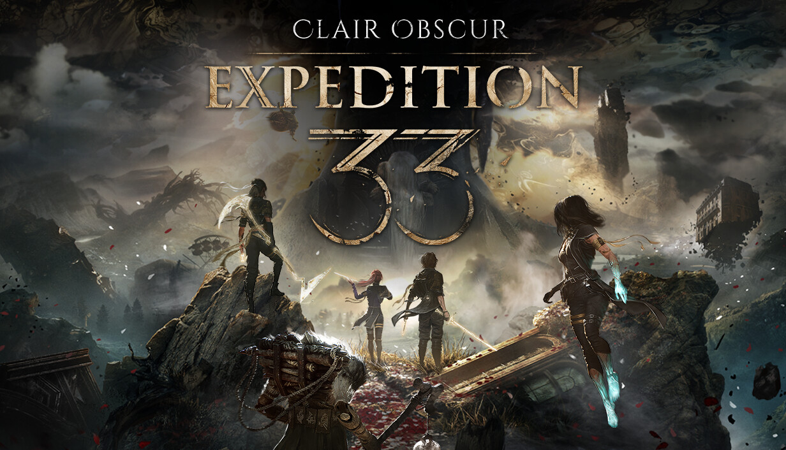
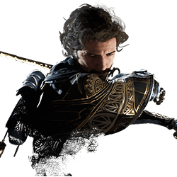
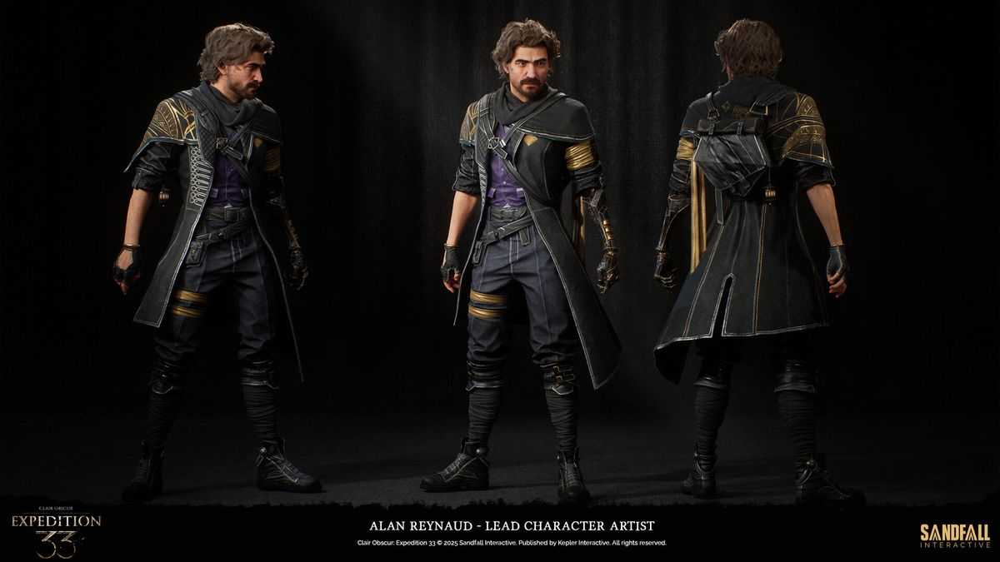

Clair Obscur: Expedition 33
Clair Obscur: Expedition 33 is a single-player RPG game developed by Sandfall Interactive and published by Kepler Interactive. Players will lead the members of Expedition 33 as Gustave, a resourceful and dedicated engineer, on a journey through a world inspired by Belle Epoque France to seek and destroy the Paintress, as she is the reason people are dying.

Gustave
Gustave is a Character in Clair Obscur Expedition 33. Gustave, a devoted engineer turned Expeditioner, devotes his life to battling the Paintress for the future of Lumière. Characters are various members and allies of Expedition 33 who are on a quest to stop the "Paintress" from painting death. These characters are mainly party members who can fight in combat and explore the world of wonders inspired by Belle Époque France. Gustave grew up feeling suffocated by the Paintress' constant presence over Lumière. As an engineer, he has dedicated his life to the city's defence and agricultural systems, striving to protect and provide for his people.

